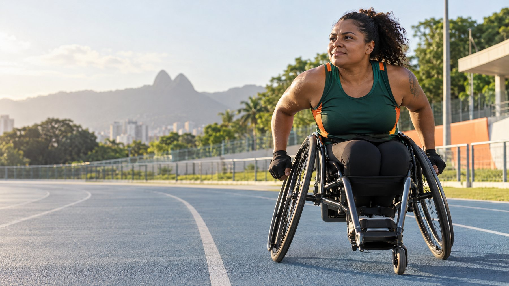

14,4 mi
pessoas com deficiência no Brasil, segundo o Censo 2022
Sustentabilidade social · inclusão · ODS 3 e 10
Um guia acessível para conhecer modalidades, encontrar caminhos para praticar e ampliar a participação de pessoas com deficiência no esporte.

Contexto com fonte pública
O Censo Demográfico 2022 estimou 14,4 milhões de pessoas com deficiência, equivalentes a 7,3% da população de 2 anos ou mais. O dado reforça a importância de remover barreiras e ampliar oportunidades — não define a experiência individual de ninguém.
pessoas com deficiência no Brasil, segundo o Censo 2022
da população com 2 anos ou mais, na definição estatística usada pelo IBGE
informação organizada para conhecer, localizar e participar
Fonte: IBGE, Pessoas com Deficiência e as Desigualdades Sociais no Brasil, 2ª edição (Censo 2022).
Impacto social
O projeto é informativo e acadêmico. Sua contribuição é facilitar acesso a informação e a caminhos de participação; não representa certificação nem parceria institucional.
Apresenta o esporte como oportunidade de movimento, convivência e bem-estar, respeitando orientação profissional e a escolha de cada pessoa.
Conheça o ODS 3 no IpeaDestaca barreiras e caminhos para participação de pessoas com deficiência em igualdade de condições.
Conheça o ODS 10 no IpeaConvida a observar transporte, calçadas e espaços esportivos seguros, inclusivos e acessíveis.
Conheça o ODS 11 no IpeaAtualizações externas
As matérias abaixo são publicadas pelo Comitê Paralímpico Brasileiro (CPB). O AdaptSport não é a fonte dessas notícias.
O CPB publicou informações sobre os voluntários selecionados e as etapas da competição.
Ler matéria no CPBUma atualização sobre formação e modalidades paralímpicas em Aracaju.
Ler matéria no CPBConsulte a agenda completa, resultados e comunicados diretamente no canal do Comitê.
Abrir notícias do CPBGuia rápido local
Digite um assunto para receber uma orientação predefinida e links do próprio site. Este recurso funciona no navegador, não usa um modelo generativo e não envia dados.
De um panorama inicial a caminhos práticos para conhecer o esporte adaptado.